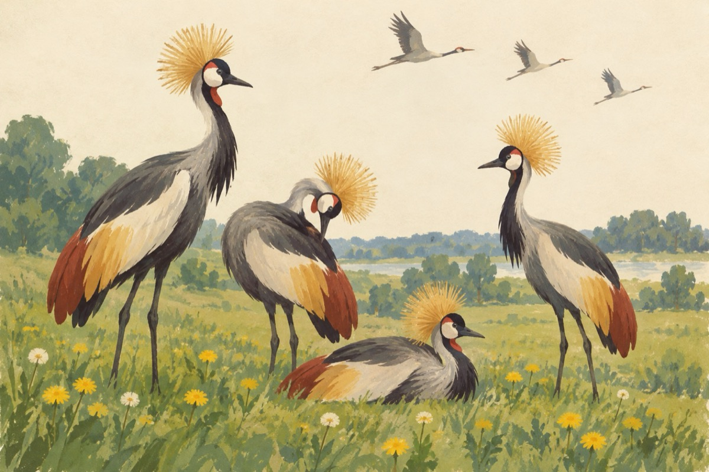

Vin cocorii
Vin cocorii cârduri, cârduri
Dar nu sosesc orișicum
Când îi vezi te pun pe gânduri
Străbătând atâta drum
Iată-i jos la iarbă verde
Din suișul cerului
Ce penaj, nu-ți vine-a crede
Opera misterului
Pe cap smoc de păpădie
Aparent parcă-i un coc
Papionul, un motiv de fantezie
La așa corp, așa și cioc
Dacă-i vezi, să știi că ai noroc!
Vasile Groza